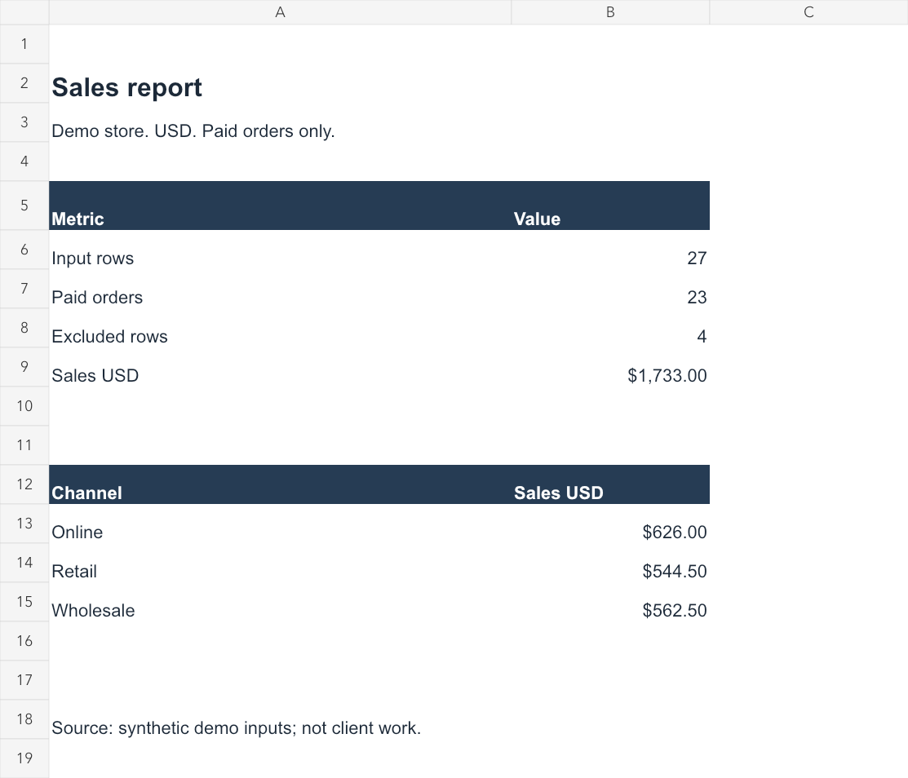

一家模拟文具小店的数据工作台：合并订单、整理客户资料，把处理后的结果变成可查询、可导出的报表。
开始日期不能晚于结束日期。
筛选条件同步作用于图表与订单明细。
当前范围内，各渠道的销售额。
没有符合条件的订单。请调整筛选条件。
JSON 输入 → 格式校验与去重 → CSV 导出与异常记录。
CSV 中以公式符号开头的文本已添加安全前缀，避免打开表格时被执行。
读取多个工作簿与工作表，验证字段、排除冲突订单，生成公式驱动的销售汇总、明细和异常清单。
只用 Python 标准库，整理 JSON 客户资料并导出 CSV。保留异常来源，并防止 CSV 公式注入。
按日期、渠道和商品筛选，图表与明细同步更新，导出当前结果。支持窄屏与键盘操作。
从实际生成的工作簿渲染，销售额与看板使用相同的有效订单。
